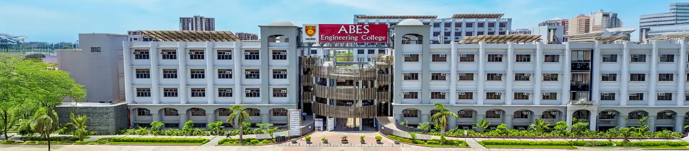

ABES Engineering College (ABESEC), located in Ghaziabad, Uttar Pradesh, is a premier private institute established in 2000. Accredited with an 'A' Grade by NAAC and affiliated with Dr. A.P.J. Abdul Kalam Technical University (AKTU), it offers popular UG/PG programs like B.Tech, MCA, and MBA. It is renowned for its strong placements and industry partnerships.
Key Highlights
- Academics & Rankings: ABESEC features in the 201-300 NIRF Engineering rank band and holds NBA accreditation for several of its core and emerging tech programs.
- Placements: The institution consistently reports a high placement percentage (around 79-90%), with recent top packages peaking between ₹44 LPA and ₹59 LPA. Major corporate recruiters include Amazon, TCS, Microsoft, and Cisco.
- Admission Process: The majority of seats (85%) are filled through UPTAC counseling based on JEE Main ranks, while 15% are reserved for direct/management quota entries.
- Campus Life: Spread across 15 acres, the campus includes separate hostels, an extensive library, and an array of active student-driven technical and cultural clubs.